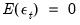
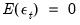

EViews allows you to perform the Lo and MacKinlay variance ratio test for homoskedastic and heteroskedastic random walks, using the asymptotic normal distribution (Lo and MacKinlay, 1988) or wild bootstrap (Kim, 2006) to evaluate statistical significance. In addition, you may compute the rank, rank-score, or sign-based forms of the test (Wright, 2000), with bootstrap evaluation of significance. In addition, EViews offers Wald and multiple comparison variance ratio tests (Richardson and Smith, 1991; Chow and Denning, 1993), so you may perform joint tests of the variance ratio restriction for several intervals.
First, open the series which contains the data which you wish to test and click on Note that EViews allows you to perform the test using the differences, log differences, or original data in your series as the random walk innovations.
The dropdown determines whether you wish to see your test output in or form. (As we discuss below, the choices differ slightly in a panel workfile.)
The section describes the properties of the data in the series. By default, EViews assumes you wish to test whether the data in the series follow a , so that variances are computed for differences of the data. Alternately, you may assume that the data follow an so that the innovations are obtained by taking log differences, or that the series contains the themselves.
The section describes the method used to compute your test. By default, EViews computes the basic Lo and MacKinlay variance ratio statistic assuming heteroskedastic increments to the random walk. The default calculations also allow for a non-zero innovation mean and bias correct the variance estimates.
The dropdown, which defaults to , instructs EViews to use the original Lo and MacKinlay test statistic based on the innovations obtained from the original data. You may instead use the dropdown to instruct EViews to perform the variance ratio test using , (van der Waerden scores), or of the data.
For the Lo and MacKinlay test statistic, the three checkboxes directly beneath the dropdown allow you to choose whether to bias-correct the variance estimates, to construct the test using the heteroskedasticity robust test standard error, and to allow for non-zero means in the innovations. The dropdown may be used to select between computing the test probabilities using the default results (Lo and MacKinlay 1988), or using the (Kim 2006). If you choose to perform a wild bootstrap, the portion on the lower right of the dialog will prompt you to choose a bootstrap error distribution (, , ), number of replications, random number generator, and to specify an optional random number generator seed.
For variance ratio test computed using , (van der Waerden scores), or of the data, the probabilities will be computed by permutation bootstrapping using the settings specified under . For the ranks and rank scores tests, there is an additional option for the method of assigning ranks in the presence of tied data.
Lastly, the section identifies the intervals whose variances you wish to compare to the variance of the one-period innovations. You may specify a single period or more than one period; if there is more than one period, EViews will perform one ore more joint tests of the variance ratio restrictions for the specified periods.

If you are performing your test on a series in a panel workfile, the options differ slightly. If you wish to produce output in tabular form, you can choose to compute individual variance ratio tests for each cross-section and form a Fisher Combined test (), or you can choose to stack the cross-sections into a single series and perform the test on the stacked panel (). Note that the stacked panel method assumes that all means and variances are the same across all cross-sections; the only adjustment for the panel structure is in data handling that insures that lags never cross the seams between cross-sections. There are two graphical counterparts to the table choices: , which produces a graph for each cross-section, and , which produces a graph of the results for the stacked analysis.
In our example, we employ the time series data on nominal exchange rates used by Wright (2000) to illustrate his modified variance ratio tests (“Wright.WF1”). The data in the first page (WRIGHT) of the workfile provide the relative-to-U.S. exchange rates for the Canadian dollar, French franc, German mark, Japanese yen, and the British pound for the 1,139 weeks from August 1974 through May 1996. Of interest is whether the exchange rate returns, as measured by the log differences of the rates, are i.i.d. or martingale difference, or alternately, whether the exchange rates themselves follow an exponential random walk.
We begin by performing tests on the Japanese yen. Open the JP series, then select ... to display the dialog. We will make a few changes to the default settings to match Wright’s calculations. First, select in the section to tell EViews that you wish to work with the log returns. Next, uncheck the and checkboxes to perform the
i.i.d. version of the Lo-MacKinlay test with no bias correction. Lastly, change the user-specified test periods to “2 5 10 30” to match the test periods examined by Wright. Click on to compute and display the results.
Since we have specified more than one test period, there are two sets of test results. The “Joint Tests” are the tests of the joint null hypothesis for all periods, while the “Individual Tests” are the variance ratio tests applied to individual periods. Here, the Chow-Denning maximum  statistic of 4.295 is associated with the period 5 individual test. The approximate p
statistic of 4.295 is associated with the period 5 individual test. The approximate p-value of 0.0001 is obtained using the studentized maximum modulus with infinite degrees of freedom so that we strongly reject the null of a random walk. The results are quite similar for the Wald test statistic for the joint hypotheses. The individual statistics generally reject the null hypothesis, though the period 2 variance ratio statistic
p-value is slightly greater than 0.05.
Next, we repeat the previous analysis but allow for heteroskedasticity in the data and use bootstrapping to evaluate the statistical significance. Fill out the dialog as before, but enable the checkbox and use the dropdown to select (with the two-point distribution, 5000 replications, the Knuth generator, and a seed for the random number generator of 1000 specified in the section). The top portion of the results is depicted here:
Note that the Wald test is no longer displayed since the test methodology is not consistent with the use of heteroskedastic robust standard errors in the individual tests. The p-values for the individual variance ratio tests, which are all generated using the wild bootstrap, are generally consistent with the previous results, albeit with probabilities that are slightly higher than before. The individual period 2 test, which was borderline (in)significant in the homoskedastic test, is no longer significant at conventional levels. The Chow-Denning joint test statistic of 3.647 has a bootstrap
p-value of 0.0012 and strongly rejects the null hypothesis that the log of JP is a martingale.
The standard errors employed in forming the individual z-statistics (and those displayed in the corresponding graph view) are obtained from the asymptotic normal results. The probabilities for the individual
z-statistics and the joint max and Wald statistics, which all strongly reject the null hypothesis, are obtained from the permutation bootstrap.
We will redo the heterogeneous Lo and MacKinlay test example from above using the panel data series. Select in the dropdown then fill out the remainder of the dialog as before, then click on . The output, which takes a moment to generate since we are performing 5000 bootstrap replications for each cross-section, consists of two distinct parts. The top portion of the output:
Alternately, Lo and MacKinlay outline a heteroskedastic random walk hypothesis where they weaken the i.i.d. assumption and allow for fairly general forms of conditional heteroskedasticity and dependence. This hypothesis is sometimes termed the martingale null, since it offers a set of sufficient (but not necessary), conditions for

to be a martingale difference sequence (
m.d.s.).
Under the i.i.d. hypothesis we have the estimator,
while under the m.d.s. assumption we may use the kernel estimator,
To control the size of the joint test, Chow and Denning (1993) propose a (conservative) test statistic that examines the maximum absolute value of a set of multiple variance ratio statistics. The p-value for the Chow-Denning statistic using

variance ratio statistics is bounded from above by the probability for the Studentized Maximum Modulus (SMM) distribution with parameter

and

degrees-of-freedom. Following Chow and Denning, we approximate this bound using the asymptotic SMM distribution.
An second approach is available for variance ratio tests of the i.i.d. null. Under this set of assumptions, we may form the joint covariance matrix of the variance ratio test statistics as in Richardson and Smith (1991), and compute the standard Wald statistic for the joint hypothesis that all

variance ratio statistics equal 1. Under the null, the Wald statistic is asymptotic Chi-square with

degrees-of-freedom.
Wright also proposes a modification of the homoskedastic Lo and MacKinlay statistic in which each is replaced by its sign. This statistic is valid under the m.d.s. null hypothesis, and under the assumption that , the exact sampling distribution may also be approximated using a permutation bootstrap. (EViews does not allow for non-zero means when performing the sign test since allowing

introduces a nuisance parameter into the sampling distribution.)
First, under the assumption that cross-sections are independent, with cross-section heterogeneity of the processes, we may compute separate joint variance ratio tests for each cross-section, then combine the p-values from cross-section results using the Fisher approach as in Maddala and Wu (1999). If we define

to be a
p-value from the
i-th cross-section, then under the hypothesis that the null hypothesis holds for all

cross-sections,


in Equation (42.109) with in the no-drift case, or with in the drift case.
Lo and MacKinlay show that the variance ratio z-statistic:observations formed by weighting the original data by mean 0 and variance 1 random variables, and using the results to form bootstrap distributions of the test statistics. The bootstrap p-values are computed directly from the fraction of replications falling outside the bounds defined by the estimated statistic.
 -period difference should be
-period difference should be  times the variance of the one-period difference. Evaluating the empirical evidence for or against this restriction is the basis of the variance ratio test.
times the variance of the one-period difference. Evaluating the empirical evidence for or against this restriction is the basis of the variance ratio test. statistics for the individual cross-sections, along with corresponding wild bootstrap probabilities. Note that four of the five individual test statistics do not reject the joint hypothesis at conventional levels. It would therefore appear that the Japanese yen result is the driving force behind the Fisher combined test rejection.
statistics for the individual cross-sections, along with corresponding wild bootstrap probabilities. Note that four of the five individual test statistics do not reject the joint hypothesis at conventional levels. It would therefore appear that the Japanese yen result is the driving force behind the Fisher combined test rejection. is an arbitrary drift parameter. The key properties of a random walk that we would like to test are  for all
is an arbitrary drift parameter. The key properties of a random walk that we would like to test are  for all  and for any positive
and for any positive  .
.  :
: are i.i.d. Gaussian with variance
are i.i.d. Gaussian with variance  (though the normality assumption is not strictly necessary). Lo and MacKinlay term this the homoskedastic random walk hypothesis, though others refer to this as the
(though the normality assumption is not strictly necessary). Lo and MacKinlay term this the homoskedastic random walk hypothesis, though others refer to this as the  ‑th difference:
‑th difference: .
.  . Letting be the rank of the
. Letting be the rank of the  among all
among all  values, we define the standardized rank and van der Waerden rank scores :
values, we define the standardized rank and van der Waerden rank scores : .
.